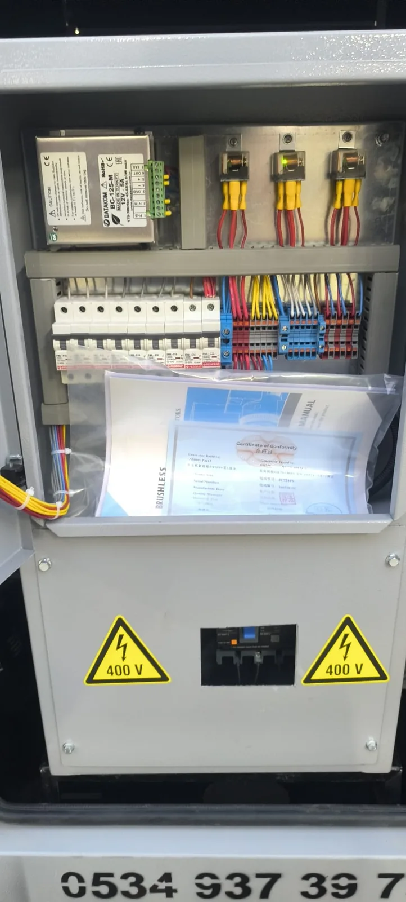

Bu arıza iki farklı şekilde görülür: Jeneratör paneli normal gerilim gösterir fakat bina veya makine beslenmez; ya da panelde de çıkış gerilimi görünmez. İlk durumda sorun çoğunlukla şalter, transfer panosu, kablo veya tesis dağıtımındadır. İkinci durumda alternatör uyarma sistemi, AVR, devir, sensör veya koruma devresi değerlendirilir.
Önce Sorunun Hangi Tarafta Olduğunu Ayırın
- Panelde gerilim ve frekans normal, tesiste elektrik yok: Çıkış şalteri, otomatik transfer panosu, tesis ana şalteri veya kablo güzergâhı kontrol gerektirir.
- Panelde gerilim sıfır veya çok düşük: Alternatör, uyarma devresi, AVR, ölçüm devresi ya da motor devriyle ilgili teknik arıza olabilir.
- Gerilim var ama yük bağlanınca düşüyor: Aşırı yük, kısa devre, motor kalkışı, düşük devir veya alternatör kapasite sorunu düşünülebilir.
- Bazı devrelerde elektrik var, bazılarında yok: Faz kaybı, dağıtım şalteri veya tesis içi bağlantı problemi olabilir.
Bu ayrım kesin teşhis değildir. Panel göstergesi de arızalı olabilir; ekran değeri ölçüm yerine geçmez. Yalnızca servise doğru bilgi vermeyi kolaylaştırır.
Olası Nedenler
- Çıkış şalterinin açık veya atmış olması: Aşırı akım ya da kısa devre sonrası şalter korumaya geçmiş olabilir. Neden bulunmadan tekrar kapatmak tehlikelidir.
- ATS'nin transfer yapmaması: Jeneratör çalışsa bile transfer panosu kaynağı kabul etmemiş, mekanik olarak geçmemiş veya kontrol beslemesini kaybetmiş olabilir.
- Aşırı yük ya da uyumsuz yük: Büyük motorun kalkışı veya beklenmedik eş zamanlı kullanım, çıkış korumasını açtırabilir.
- Motor devrinin uygun olmaması: Alternatör frekansı motor devriyle ilişkilidir. Yakıt veya motor kontrol sorunu, çıkışın kabul edilmemesine yol açabilir.
- AVR veya uyarma sistemi arızası: Alternatörün gerilim oluşturması için uyarma gerekir. AVR, sargı, diyot ve bağlantılar servis ölçümü ister.
- Kablo veya bağlantı sorunu: Gevşek, yanmış veya kopmuş bağlantı tek faz kaybı, ısınma ve gerilim düşümüne neden olabilir.
- Ölçüm ya da sensör hatası: Kontrol modülü yanlış değer görürse jeneratörü korumaya alabilir veya ATS çıkışı kabul etmeyebilir.
Kullanıcının Güvenle Kaydedebileceği Bilgiler
- Panelde görünen faz gerilimleri, frekans, kW/kVA ve alarm metni
- Çıkış şalterinin kol konumu; şaltere dokunmadan fotoğrafı
- ATS ekranında şebeke ve jeneratör kaynak göstergeleri
- Arıza sırasında hangi makinelerin veya motorların devreye girdiği
- Elektriğin bütün tesiste mi, yalnızca bazı devrelerde mi olmadığı
- Yanık kokusu, olağan dışı uğultu, titreşim veya duman bulunup bulunmadığı
“Field flash”, AVR ayarı, şalter köprüleme ve pano içi ölçüm kullanıcı işlemi değildir. Yanlış müdahale elektrik çarpmasına, yangına ve alternatör hasarına yol açabilir.
Servis Hangi Testleri Yapar?
Yetkin teknisyen önce jeneratör çıkışını yükten ayırarak güvenli ölçüm koşulunu oluşturur. Motor devri ve frekans, faz-faz ve faz-nötr gerilimleri, şalter sürekliliği, AVR beslemesi, uyarma devresi ve sargılar cihazın şemasına göre kontrol edilir. ATS bulunan tesiste jeneratör kaynağının pano tarafından algılanıp algılanmadığı ve transfer komutu ayrıca incelenir.
Arıza bir yük devreye girdiğinde oluşuyorsa yük analizi gerekir. Motor kalkışları, faz dengesizliği ve kablo kesiti için sanayi tesisi kVA hesabı rehberimizi inceleyebilirsiniz.
Üretici Kaynağı
Caterpillar'ın “motor çalışıyor fakat güç yok” yardım sayfası, dışarıdan görsel kontrolün ardından model kılavuzuna göre çıkış korumasının değerlendirilmesini; sorun sürerse yetkili servise başvurulmasını önerir. Sayfadaki bazı adımlar taşınabilir ürünlere özeldir ve sabit sanayi jeneratörüne doğrudan uygulanmamalıdır. Caterpillar teknik yardım sayfasını kaynak olarak inceleyebilirsiniz.
Mersin'de çıkış, ATS ve alternatör kontrolü için jeneratör teknik servis; onarım gereken durumlar için jeneratör onarım sayfamıza ulaşın.